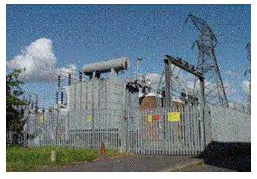

In modern days, the electrical power is generated, transmitted and distributed mostly in the form of AC or Alternating current. The power plants are located in those places, where the facilities for power generation that is transport, water, raw material etc are easily availed. Generally they are installed very far from the load centers, a large network of transmission cables are used to transmit the electrical power from the plant to the distribution centers. In several sectors, we need to change the characteristics of power system like the power factor, voltage level, AC to DC conversion. These necessitate the use of electrical substations near to the generation plants and also near to the consumer load centers. In very simple words, a substation is a designed assembly of electrical apparatus which is used to change several characteristics of electrical power system. Generally the prime objective of an electrical substation is to change the voltage level (by power transformer) from high to low (at consumer side) or low to high (at generation side) and to ensure the overall safety of the transmission and distribution network concerned with the substation. Beside of these, a substation performs several other activities like it changes the operating frequency, converts the current etc.

A substation mainly comprises of electrical power transformers, protection devices like CT, PT, control systems and a suitable grounding arrangement such as earthing transformer. An electrical substation should be installed at the center of gravity of local loads, which will ensure the economy of the system. Additionally the equipment wiring and connections of a substation must be reliable and safe, which will ensure the continuity of power supply. The foundation and design concept must be optimized in order to reduce the capital cost, as well as the running cost also.
Regular maintenance is required to ensure the best performance even in problematic operating conditions.
 by
by